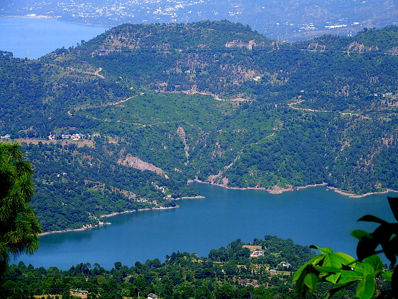
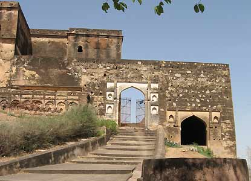
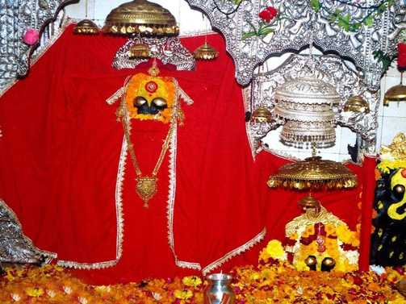
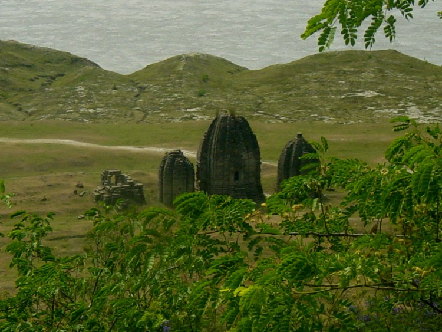
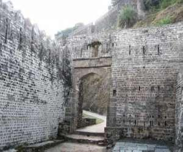
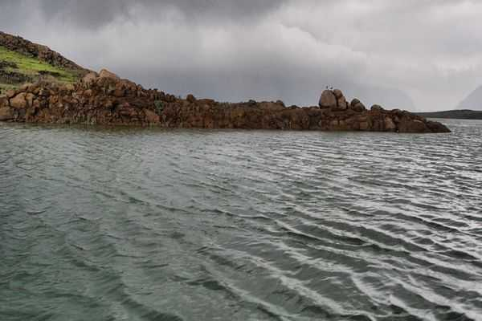
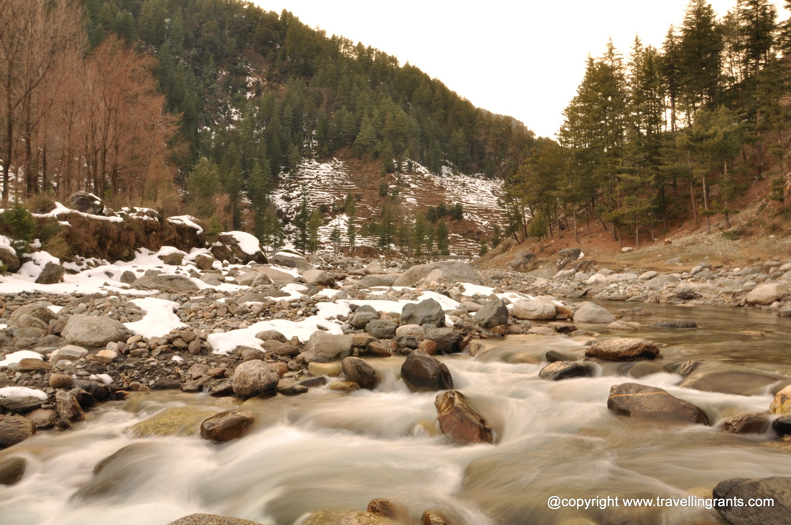
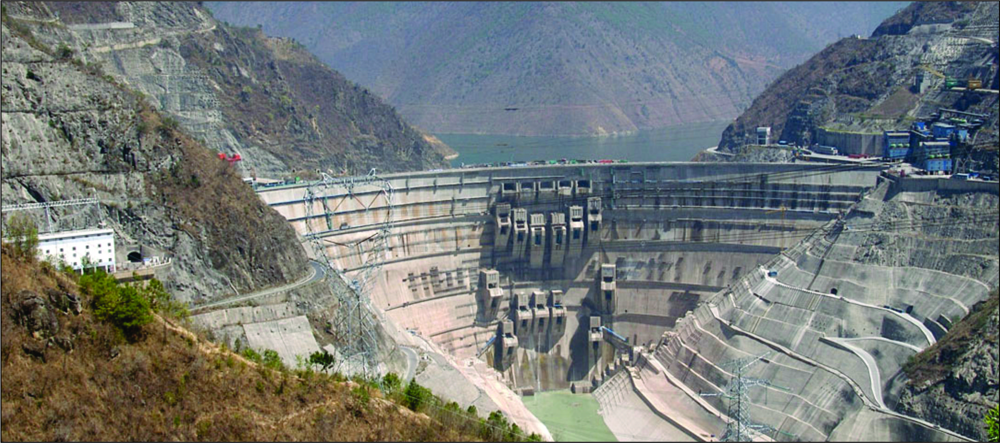

BILASPUR:
Bilaspur formerly the seat of the ruler of the State is now submerged in the Gabind Sagar,it was situated on the south east side of the Satluj.
Bilaspur Township is situated just above the old town of Bilaspur at an height of 670m. above in sea level.
The new Bilaspur Township can be truely described as the first planned hill town of the country.
The pleasure of a visit will be enhanced manifold when a motor launch is preferred as the means of travel, gliding through cool and enchanting waters of the lake.The Nalwari or annual cattle fair is held at Bilaspur for four or five days in March / April, the occasion is marked by wrestling and other amusements. Cattle are brought from Nalagarh and neighboring parts of Punjab. Bilaspur is one of the hottest places in Himachal Pradesh. But because of lake, evening become very soothingly pleasant.
Famous Places Around Bilaspur :

Bahadurpur Fort : On the top of a hill known as Bahadurpur the highest (1980 mt.) point in the district near Tepra Village in Paragana Bahadurpur, distance about 40 km. from Bilaspur. The range is embellished by a beautiful wood of deodar and ban trees. It is just 6 km. above Namhol, from this high place the Ratanpur Fort, Swarghat, the Fatehpur Fort, the Naina Devi hill, plains near Ropar and the mountains of Shimla can be seen. This Fort was built prior to 1835, But is in ruins now.

Shri Naina Devi Temple : A notable place of worship in the district is the temple of Shri Naina Devi Ji, situated on the hill top which rises some 915 mt. above the sacred town of Anandpur Sahib in Ropar, The temple stands on the very summit of the hill above a small bazar and is reached by a long flight of stone steps or by a cable car.

Sariun Fort : To the eastern side of the Tiun range, on the lifty range and peak of Sariun like this stronghold at an elevation of about 1500 mt. above MSL. It is about 58 Km. from Bilaspur. Tradition holds that the fort was originally built by same Raja of the erstwhile Suket State and was subsequently wrested by the ruler of Bilaspur, the local people entertain a superstition according to which the stones once forming part of the Fort are not used in any residential building.

Tiun Fort : Relics of a fort on the top of a hill known as Tiun range, at distance of about 55 Km. from Bilaspur, on the Ali Khad crossing Ghumarwin - Ladraur motorable road and about 10 Km. of Ghumarwin proper still serves to remind of the ancient turbulent times when wars in this area were perhaps a routine feature.

Vyas Cave : The name of sage Vyas is well known in these parts. It is situated at the foot of the new township, the belief is that Vyas Rishi meditated in this cave. The origin of the town, Vyaspur is believed to have been derived from this cave. The Vyas Rishi of Mahabharata fame philosophy of life in meditation in this cave, which lies on the left bank of river Satluj. It is a place of pilgrimage.

Swarghat : Swarghat is ideally situated about 40 km. off Bilaspur on the Bilaspur-Chandigarh road. Perched at an elevation of about 1220 mt. from sea level. Naina Devi temple and Bhakra Dam, are also approachable from here. There is a temple dedicated to Lakshmi Narain. An ideal spot for a quiet overnight's stay for the tourists. HPTDC, has recently constructed a 8 room Hotel here.

Bhakra Dam : Situated at Bhakra village of Bilaspur, about 13 km upstream from Nangal township, it is one of the highest straight gravity dams in the world. The lake is about 90 km long covering an area of about 168 sq km of which 90 percent is in Bilaspur and 10 percent in Una district. The dam was dedicated to nation by late Pt. Jwahar Lal Nehru on November 20th, 1963. The view of vast dam and green jungles around is fascinating indeed.
